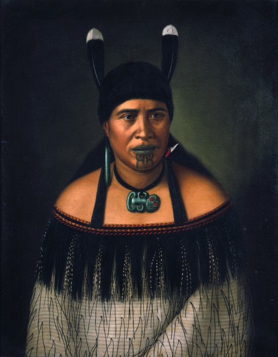

|
|
NEW ZEALAND BI CULTISM |
HOME |
ABOUT US |
INFORMATION |
CONTACT US |
The Nature and significance of New Zealands bi cultural societyThe significance of New Zealand's bi cultural societies is that this means New Zealand is one country with two nations Māori and Non Māori. This gives Māori opportunity to pursue greater self governance and allow the non- Māori to be multicultural . Treaty of Waitangi history and significanceTe tiriti o Waitangi (known in English as the treaty of Waitangi) was made in 1840 between representative of the British crown and more then 500 Rangatira Māori . it resulted in the declaration of British sovereignty over New Zealand. the significance of this was that the treaty of Waitangi became the founding document of New Zealand. Māori agreed to let other people live in there country. British could make rules about behavior and maker sure everyone obeyed them. How New Zealand's bi cultural society relates to the IT industryMāori have a representative body on the internet called New Zealand Māori internet society (NZMIS).It was established in 1997.The NZMIS was involved in the development of the Maori.nz and iwi.nz second level domain names. Most iwi have their own websites. |
||
|  |

|
|